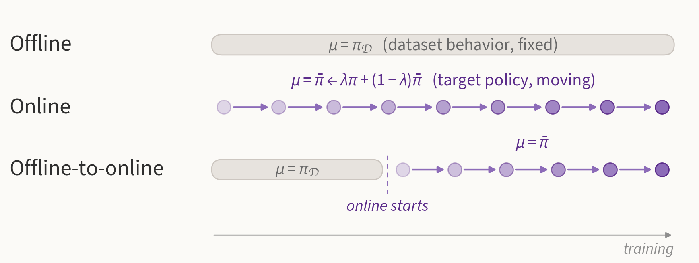
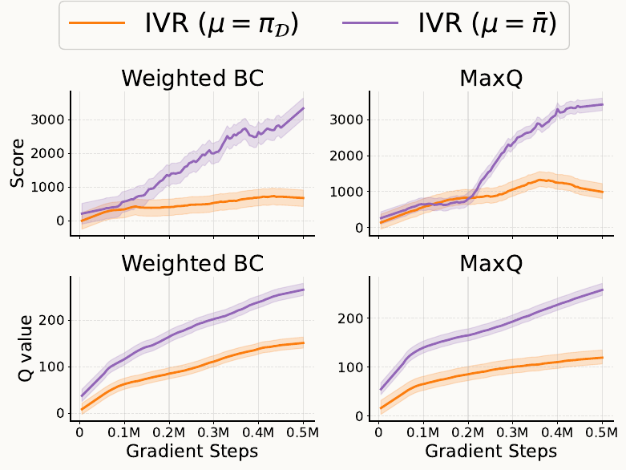
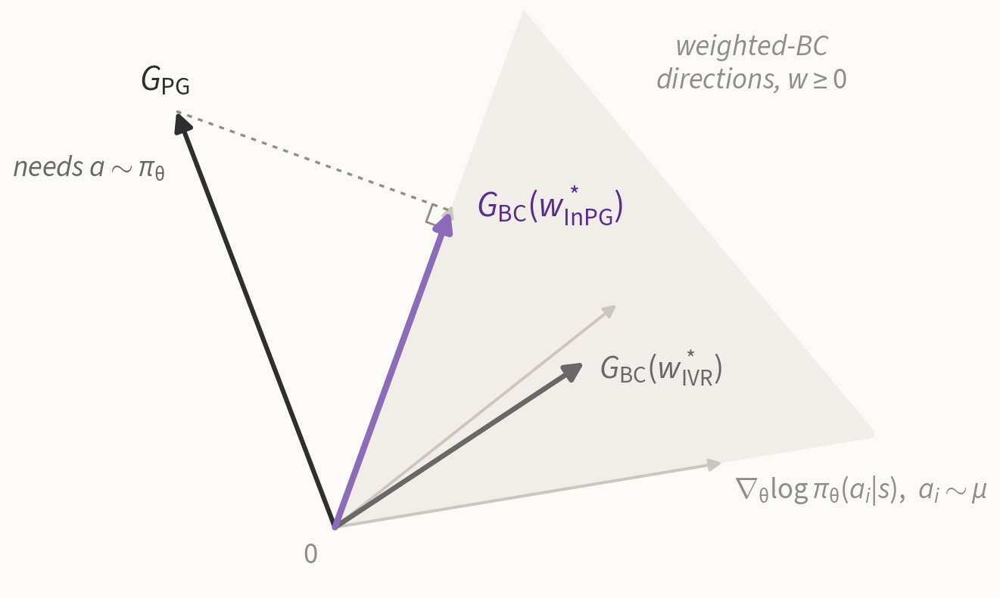
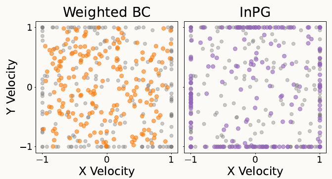
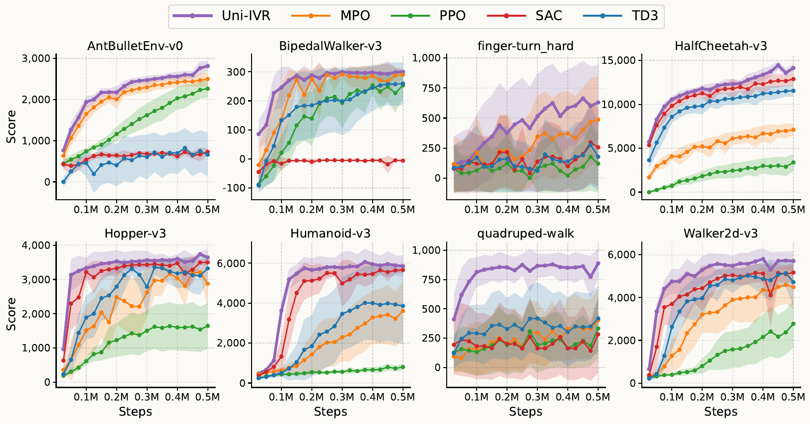
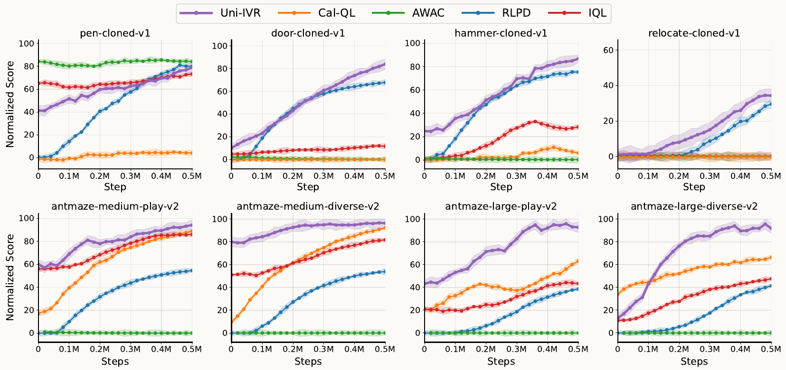

1UT Austin 2Shanghai Jiao Tong University 3Nanyang Technological University 4Tsinghua University
NeurIPS 2025/* equal contribution
Uni-RL is one off-policy algorithm for online, offline and offline-to-online RL. It regularizes the value function toward a reference policy: the dataset behavior offline, and a slowly updated target policy online, which turns the regularizer into an implicit trust region that stays off-policy. Policies are extracted with an in-sample policy gradient that only uses actions from the reference policy.

Online methods such as PPO and SAC struggle with offline data, offline methods such as CQL and IVR are over-conservative once online access is available, and offline-to-online methods need setting-specific designs. Uni-RL starts from a single constrained problem with a reference policy \(\mu\):
$$\pi^* = \arg\max_\pi\ \mathbb{E}_{(s,a)\sim d^\pi}\big[r(s,a)\big] \quad\text{s.t.}\quad \mathbb{E}_{s\sim d^\pi}\Big[D_f\big(\pi(\cdot|s)\,\|\,\mu(\cdot|s)\big)\Big]\le\epsilon .$$Its Lagrangian is a behavior-regularized MDP in which the penalty \(\alpha\, g\big(\pi/\mu\big)\) enters the reward, so the regularization acts on the value rather than on the policy. The setting only decides what \(\mu\) is:
By duality, as in IVR, the regularized optimal values solve two regression problems that only need samples from \(\mu\):
$$\min_V\ \mathbb{E}_{s\sim\mathcal D,\ {\color{#5B2C8A}a\sim\mu}}\Big[V(s) + \alpha\, f_{\mathrm{IVR}}\big((Q(s,a)-V(s))/\alpha\big)\Big],$$ $$\min_Q\ \mathbb{E}_{(s,a,s')\sim\mathcal D}\Big[\big(r(s,a)+\gamma V(s')-Q(s,a)\big)^2\Big],$$with \(f_{\mathrm{IVR}}(x)=\exp(x)\) for the KL divergence and \(\mathbb{I}(x>-2)(x^2/4+x+1)\) for \(\chi^2\). Neither \(\pi(a|s)\) nor \(\mu(a|s)\) is ever evaluated, so the policy can be a diffusion or flow model, and offline the dataset actions are the samples from \(\pi_{\mathcal D}\).
Online, the replay buffer contains many early, sub-optimal transitions. Regularizing toward the buffer's behavior anchors the value to that data, much like offline RL on a poor dataset. Uni-RL instead regularizes toward a target policy that keeps improving:
$$\min_V\ \mathbb{E}_{s\sim\mathcal D,\ {\color{#5B2C8A}a\sim\bar\pi}}\Big[V(s) + \alpha\, f_{\mathrm{IVR}}\big((Q(s,a)-V(s))/\alpha\big)\Big],\qquad \bar\pi \leftarrow \lambda\pi + (1-\lambda)\bar\pi .$$
This is a trust-region update, but one imposed through the value function: the policy update itself never needs on-policy samples. Uni-RL is therefore off-policy, unlike TRPO and PPO, and in offline-to-online RL it relaxes the dataset constraint gradually instead of dropping it at once.
Using \(\bar\pi\) as the reference gives an off-policy trust region and removes IVR's online over-conservatism.
The regularized optimum has a closed-form ratio to the reference policy, \(w^*_{\mathrm{IVR}}(s,a) = \pi^*/\mu = \max\big\{0,(f')^{-1}\big((Q^*-V^*)/\alpha\big)\big\}\). The two usual ways to extract it each give something up:
InPG keeps the weighted-BC form and treats the weights as free variables. It picks the non-negative weights whose BC gradient is closest to the policy gradient:
$$w^*_{\mathrm{InPG}} = \arg\min_{w\ge 0}\ \mathbb{E}_{s\sim\mathcal D}\Big[\big\|G_{\mathrm{PG}} - G_{\mathrm{BC}}(w)\big\|^2\Big],$$ $$G_{\mathrm{PG}} = \nabla_\theta\mathbb{E}_{a\sim\pi_\theta}\big[Q(s,a)\big],\quad G_{\mathrm{BC}}(w) = \mathbb{E}_{a\sim\mu}\big[w(s,a)\,\nabla_\theta\log\pi_\theta(a|s)\big].$$
We parameterize \(w\) with a network, train it on this L2 loss, clip it at zero, and extract the policy with \(\max_\pi \mathbb{E}_{a\sim\mu}\big[{\color{#5B2C8A}w^*_{\mathrm{InPG}}}\log\pi(a|s)\big]\). Every BC action comes from \(\mu\), so the update stays inside the reference support, while the weights now follow the value gradient.

On maze2d-umaze, weighted BC stays centered on the dataset distribution, while InPG picks out the better actions near the boundary of the action space.
Eight environments from Gym, PyBullet and DMControl; Gaussian policies for every method; 0.5M steps, 5 seeds. Uni-IVR in the legends is Uni-RL.

Uni-RL is more sample-efficient than both off-policy methods without a trust region (SAC, TD3, MPO) and the on-policy trust-region method PPO. The margin is largest on the hard DMControl tasks finger-turn_hard and quadruped-walk.
Normalized scores at the end of training, 5 seeds. Standard deviations and more baselines are in the paper.
| IQL | IVR | Diffusion-QL | IDQL | Uni-RL Gaussian | Uni-RL Diffusion | |
|---|---|---|---|---|---|---|
| halfcheetah-m | 47.4 | 48.3 | 51.1 | 51.0 | 49.4 | 58.0 |
| hopper-m | 66.3 | 75.5 | 90.5 | 65.4 | 99.5 | 101.3 |
| walker2d-m | 72.5 | 84.2 | 87.0 | 82.5 | 89.3 | 92.3 |
| halfcheetah-m-r | 44.2 | 44.8 | 47.8 | 45.9 | 45.3 | 48.4 |
| hopper-m-r | 95.2 | 99.7 | 101.3 | 92.1 | 101.1 | 101.3 |
| walker2d-m-r | 76.1 | 81.2 | 95.5 | 85.1 | 86.6 | 90.8 |
| halfcheetah-m-e | 86.7 | 94.0 | 96.8 | 95.9 | 94.2 | 97.3 |
| hopper-m-e | 101.5 | 111.8 | 111.1 | 108.6 | 111.0 | 111.2 |
| walker2d-m-e | 110.6 | 110.0 | 110.1 | 112.7 | 110.8 | 114.1 |
| antmaze-u | 85.5 | 92.2 | 93.4 | 94.0 | 94.1 | 98.1 |
| antmaze-u-d | 66.7 | 74.0 | 66.2 | 80.2 | 80.4 | 82.0 |
| antmaze-m-p | 72.2 | 80.2 | 76.6 | 84.5 | 86.0 | 88.5 |
| antmaze-m-d | 71.0 | 79.1 | 78.6 | 84.8 | 82.7 | 89.7 |
| antmaze-l-p | 39.6 | 53.2 | 46.4 | 63.5 | 59.9 | 68.6 |
| antmaze-l-d | 47.5 | 52.3 | 56.6 | 67.9 | 60.2 | 69.0 |
| mean | 72 | 79 | 81 | 81 | 83 | 87 |
Offline, Uni-RL's value objective reduces to IVR's, so the gain from IVR's 79 to 83 with the same Gaussian policy class reflects better policy extraction. A diffusion policy raises the mean to 87, above Diffusion-QL and IDQL (both 81).
Online fine-tuning after 250k offline steps on Adroit and AntMaze, 5 seeds.

Methods constrained to the dataset (IQL, AWAC) barely improve on the pretrained policy, Cal-QL inherits CQL's difficulty on Adroit and large AntMaze, and RLPD, which skips pretraining, learns slowly where the offline data is good. Uni-RL fine-tunes without an early drop and ends highest on every task except pen-cloned.
@inproceedings{xu2025unirl,
title = {Uni-RL: Unifying Online and Offline RL via Implicit Value Regularization},
author = {Xu, Haoran and Mao, Liyuan and Jin, Hui and Zhang, Weinan and
Zhan, Xianyuan and Zhang, Amy},
booktitle = {Advances in Neural Information Processing Systems},
year = {2025}
}
IVR: Xu et al., ICLR 2023 · IQL: Kostrikov et al., ICLR 2022 · Diffusion-QL: Wang et al., ICLR 2023 · IDQL: Hansen-Estruch et al., 2023 · Cal-QL: Nakamoto et al., NeurIPS 2023 · RLPD: Ball et al., ICML 2023 · AWAC: Nair et al., 2020 · MPO: Abdolmaleki et al., ICLR 2018 · PPO: Schulman et al., 2017 · D4RL: Fu et al., 2020